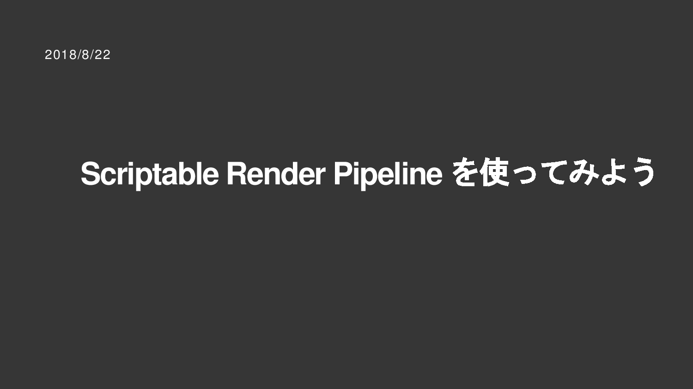
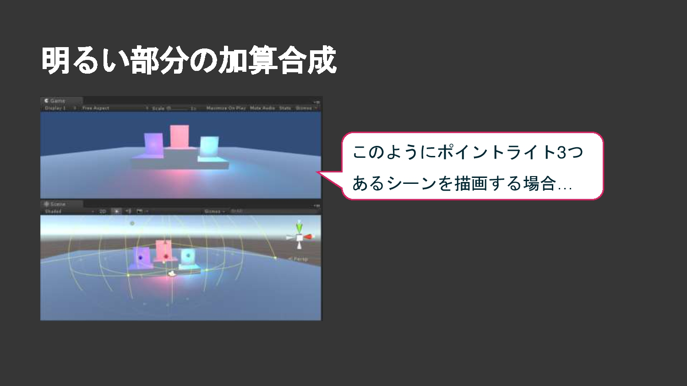
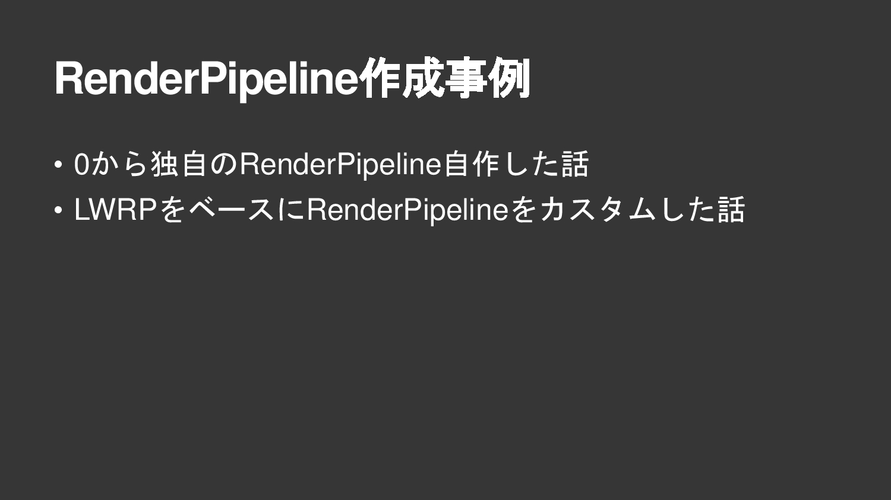

CEDEC2018 Scriptable Render Pipelineを使ってみよう¶
CEDEC2018 Scriptable Render Pipelineを使ってみよう 0001¶

CEDEC2018 Scriptable Render Pipelineを使ってみよう 0002¶
CEDEC2018 Scriptable Render Pipelineを使ってみよう 0003¶
CEDEC2018 Scriptable Render Pipelineを使ってみよう 0004¶

CEDEC2018 Scriptable Render Pipelineを使ってみよう 0005¶
CEDEC2018 Scriptable Render Pipelineを使ってみよう 0006¶

CEDEC2018 Scriptable Render Pipelineを使ってみよう 0007¶
CEDEC2018 Scriptable Render Pipelineを使ってみよう 0008¶
CEDEC2018 Scriptable Render Pipelineを使ってみよう 0009¶
CEDEC2018 Scriptable Render Pipelineを使ってみよう 0010¶
CEDEC2018 Scriptable Render Pipelineを使ってみよう 0011¶
CEDEC2018 Scriptable Render Pipelineを使ってみよう 0012¶
CEDEC2018 Scriptable Render Pipelineを使ってみよう 0013¶
CEDEC2018 Scriptable Render Pipelineを使ってみよう 0014¶
CEDEC2018 Scriptable Render Pipelineを使ってみよう 0015¶
CEDEC2018 Scriptable Render Pipelineを使ってみよう 0016¶
CEDEC2018 Scriptable Render Pipelineを使ってみよう 0017¶
CEDEC2018 Scriptable Render Pipelineを使ってみよう 0018¶
CEDEC2018 Scriptable Render Pipelineを使ってみよう 0019¶
CEDEC2018 Scriptable Render Pipelineを使ってみよう 0020¶
CEDEC2018 Scriptable Render Pipelineを使ってみよう 0021¶

CEDEC2018 Scriptable Render Pipelineを使ってみよう 0022¶
CEDEC2018 Scriptable Render Pipelineを使ってみよう 0023¶
CEDEC2018 Scriptable Render Pipelineを使ってみよう 0024¶
CEDEC2018 Scriptable Render Pipelineを使ってみよう 0025¶
CEDEC2018 Scriptable Render Pipelineを使ってみよう 0026¶
CEDEC2018 Scriptable Render Pipelineを使ってみよう 0027¶
CEDEC2018 Scriptable Render Pipelineを使ってみよう 0028¶
CEDEC2018 Scriptable Render Pipelineを使ってみよう 0029¶
CEDEC2018 Scriptable Render Pipelineを使ってみよう 0030¶
CEDEC2018 Scriptable Render Pipelineを使ってみよう 0031¶
CEDEC2018 Scriptable Render Pipelineを使ってみよう 0032¶
CEDEC2018 Scriptable Render Pipelineを使ってみよう 0033¶
CEDEC2018 Scriptable Render Pipelineを使ってみよう 0034¶
CEDEC2018 Scriptable Render Pipelineを使ってみよう 0035¶
CEDEC2018 Scriptable Render Pipelineを使ってみよう 0036¶
CEDEC2018 Scriptable Render Pipelineを使ってみよう 0037¶
CEDEC2018 Scriptable Render Pipelineを使ってみよう 0038¶
CEDEC2018 Scriptable Render Pipelineを使ってみよう 0039¶
CEDEC2018 Scriptable Render Pipelineを使ってみよう 0040¶
CEDEC2018 Scriptable Render Pipelineを使ってみよう 0041¶
CEDEC2018 Scriptable Render Pipelineを使ってみよう 0042¶
CEDEC2018 Scriptable Render Pipelineを使ってみよう 0043¶
CEDEC2018 Scriptable Render Pipelineを使ってみよう 0044¶
CEDEC2018 Scriptable Render Pipelineを使ってみよう 0045¶
CEDEC2018 Scriptable Render Pipelineを使ってみよう 0046¶

CEDEC2018 Scriptable Render Pipelineを使ってみよう 0047¶
CEDEC2018 Scriptable Render Pipelineを使ってみよう 0048¶

CEDEC2018 Scriptable Render Pipelineを使ってみよう 0049¶
CEDEC2018 Scriptable Render Pipelineを使ってみよう 0050¶
CEDEC2018 Scriptable Render Pipelineを使ってみよう 0051¶
CEDEC2018 Scriptable Render Pipelineを使ってみよう 0052¶
CEDEC2018 Scriptable Render Pipelineを使ってみよう 0053¶
CEDEC2018 Scriptable Render Pipelineを使ってみよう 0054¶
CEDEC2018 Scriptable Render Pipelineを使ってみよう 0055¶
CEDEC2018 Scriptable Render Pipelineを使ってみよう 0056¶
CEDEC2018 Scriptable Render Pipelineを使ってみよう 0057¶
CEDEC2018 Scriptable Render Pipelineを使ってみよう 0058¶
CEDEC2018 Scriptable Render Pipelineを使ってみよう 0059¶
CEDEC2018 Scriptable Render Pipelineを使ってみよう 0060¶
CEDEC2018 Scriptable Render Pipelineを使ってみよう 0061¶
CEDEC2018 Scriptable Render Pipelineを使ってみよう 0062¶
CEDEC2018 Scriptable Render Pipelineを使ってみよう 0063¶
CEDEC2018 Scriptable Render Pipelineを使ってみよう 0064¶
CEDEC2018 Scriptable Render Pipelineを使ってみよう 0065¶
CEDEC2018 Scriptable Render Pipelineを使ってみよう 0066¶
CEDEC2018 Scriptable Render Pipelineを使ってみよう 0067¶
CEDEC2018 Scriptable Render Pipelineを使ってみよう 0068¶
CEDEC2018 Scriptable Render Pipelineを使ってみよう 0069¶
CEDEC2018 Scriptable Render Pipelineを使ってみよう 0070¶
CEDEC2018 Scriptable Render Pipelineを使ってみよう 0071¶
CEDEC2018 Scriptable Render Pipelineを使ってみよう 0072¶
CEDEC2018 Scriptable Render Pipelineを使ってみよう 0073¶
CEDEC2018 Scriptable Render Pipelineを使ってみよう 0074¶
CEDEC2018 Scriptable Render Pipelineを使ってみよう 0075¶
CEDEC2018 Scriptable Render Pipelineを使ってみよう 0076¶
CEDEC2018 Scriptable Render Pipelineを使ってみよう 0077¶

CEDEC2018 Scriptable Render Pipelineを使ってみよう 0078¶
CEDEC2018 Scriptable Render Pipelineを使ってみよう 0079¶
CEDEC2018 Scriptable Render Pipelineを使ってみよう 0080¶
CEDEC2018 Scriptable Render Pipelineを使ってみよう 0081¶
CEDEC2018 Scriptable Render Pipelineを使ってみよう 0082¶
CEDEC2018 Scriptable Render Pipelineを使ってみよう 0083¶
CEDEC2018 Scriptable Render Pipelineを使ってみよう 0084¶
CEDEC2018 Scriptable Render Pipelineを使ってみよう 0085¶
CEDEC2018 Scriptable Render Pipelineを使ってみよう 0086¶
CEDEC2018 Scriptable Render Pipelineを使ってみよう 0087¶
CEDEC2018 Scriptable Render Pipelineを使ってみよう 0088¶
CEDEC2018 Scriptable Render Pipelineを使ってみよう 0089¶